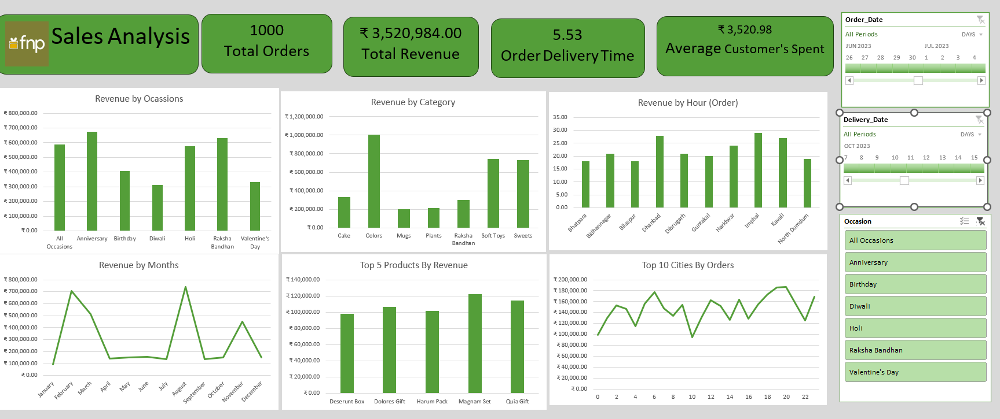

Sales Performance & Customer Analysis | Microsoft Excel
The FNP Sales Analysis Dashboard was developed to provide an interactive view of sales performance and customer purchasing behavior.
The project transforms raw sales data into meaningful business insights related to revenue performance, customer spending, product demand, seasonal trends, and operational performance.

The dashboard helps identify important sales patterns across occasions, categories, products, time periods and locations.
These insights can support sales planning, inventory planning, promotional planning, product management, customer targeting and delivery operations.
The complete project files are available below.
This project demonstrates how raw transactional sales data can be transformed into an interactive dashboard that provides a clear view of sales performance, customer behavior, product demand and operational trends.
The dashboard brings multiple business dimensions together in a single interactive decision-support tool.